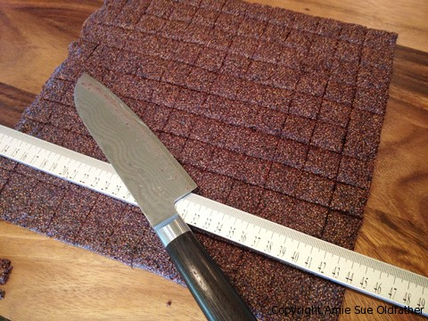
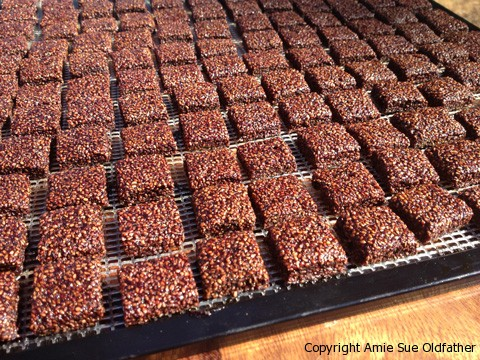

Chia Cherry Gummy Chews

~ raw, vegan, gluten-free, nut-free ~
I don’t have kids, but I still understand the importance and desire that parents have in making sure their kids eat more nutritional foods. So, with your kiddos in mind and with the back to school buzz going on right now, I came up with these little gems. Chia Cherry Gummy Chews!
I have been processing cherries till they have been coming out my ears and with bags of puree in my fridge waiting to be dehydrated into fruit leathers, I came to realize that pectin within the cherries creates a “jelly” like substance when it sits. This got me thinking… I was looking for an ingredient that would not only complement the cherry flavor (and not overpower it), I also wanted an ingredient that would offer my little chews some structure. CHIA! Of course! And talk about a powerhouse of nutrients!
I used whole chia seeds, but a person could grind them into a powder before adding it to the cherry puree if you didn’t want to see them visually. This recipe only contains three ingredients, but it doesn’t have to be limited to that. You can add chunks of other fruits or other sweeteners if needed. If you start the puree with really ripe fruit, you can usually get away with not having to add any further sweeter. I have a bit of a sweet tooth, so I went ahead and amped up the flavor a bit by adding stevia.
I was very pleased with the end result. They are packed with cherry flavor, slightly sweet but not overpowering, and had a great chew to them. I hope you and your kids enjoy them as much as I do.
Ingredients:
yields 1 tray
- 6 cups cherries, washed, remove stems and pits
- 2 cups chia seeds
- 1 1/2 tsp liquid stevia (I use NuNaturals)
Preparation:
- Select RIPE or slightly overripe fruit that has reached a peak in color, texture, and flavor.
- Prepare the cherries; wash, dry, remove stems, and pits.
- Puree the cherries in the blender or food processor until smooth. Taste and sweeten if needed. Keep in mind that flavors will intensify as they dehydrate. Add sweetener if desired. When adding a sweetener do so 1 tbsp at a time, and reblend, tasting until it is at the desired taste. It is best to use a liquid type sweetener such as raw honey or agave as an example. Don’t use granulated sugar because it tends to change the texture of the finished fruit leather to be more granular.
- Pour in the chia seeds and continue blending until everything is incorporated. This batter will be very thick.
- Spread the mix onto the teflex sheet that comes with the dehydrator. I only used 1 Excalibur tray for this recipe. The batter was very thick. Square up the edges.
- Dehydrate at 145 degrees (F) for 1 hour, then reduce the temp to 115 degrees (F) for approximately 8 hours (this will depend on how thin or thick you spread it). Remove from dehydrator and place the sheet of fruit chew onto a cutting board (remove the teflex sheet, so you don’t cut into it).
- Using a hard ruler, place the ruler on the fruit chew and use it as a guide to cut straight lines. I cut the chews into 1″ squares.
- Once all of the squares are cut, place them on the mesh sheet that comes with the dehydrator. Allow a little room in between each square so the air can circulate them.
- Continue dehydrating for about 10 hours. Remove and all the chews to cool to room temp.
- Store chews in an air-tight container in the fridge to extend the shelf life.
Culinary Explanations:
- Why do I start the dehydrator at 145 degrees (F)? Click (here) to learn the reason behind this.
- When working with fresh ingredients, it is important to taste test as you build a recipe. Learn why (here).
- Don’t own a dehydrator? Learn how to use your oven (here). I do however truly believe that it is a worthwhile investment. Click (here) to learn what I use.


© AmieSue.com